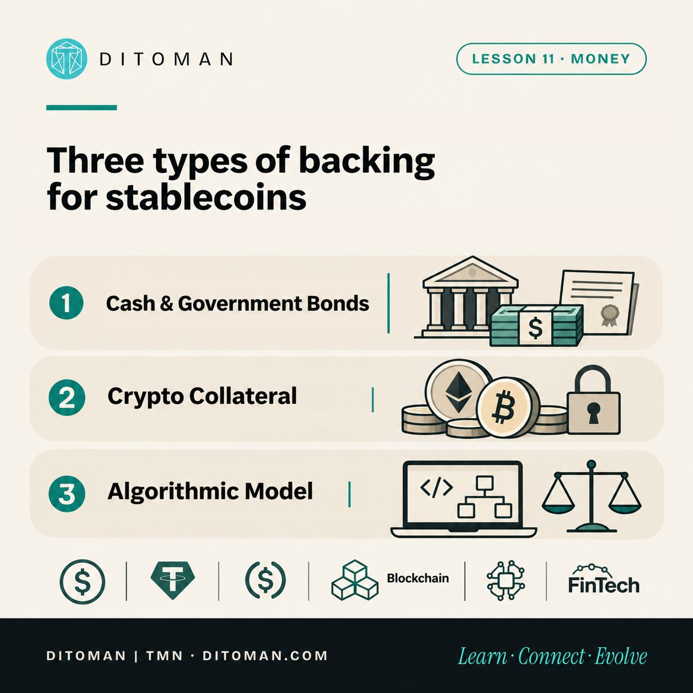

Digitale Dollar: Was deckt sie?
دلار دیجیتال، پشتوانهاش کجاست؟
Stablecoins wirken einfach: ein Token, ein Dollar. Doch diese Verbindung ist ein Versprechen, und ein Versprechen ist nur so stark wie das, was dahinter steht. In dieser Lektion sehen Sie, was hinter Stablecoins steht, wie ein bekannter Stablecoin im Mai 2022 zusammenbrach, und den wichtigsten Test, bevor Sie einem Token vertrauen.
استیبلکوینها ساده به نظر میرسند: یک توکن، یک دلار. ولی این ارتباط یک قول است و قول فقط به اندازهی چیزی که پشتش است محکم است. در این درس میبینید پشت استیبلکوینها چه چیزی هست، چطور یکی از مشهورترین استیبلکوینها در مه ۲۰۲۲ فروپاشید، و کدام آزمون پیش از اعتماد به هر توکن از همه مهمتر است.
Lektionsinhalt
محتوای درس
Lesen Sie die Lektion auf Englisch oder Persisch.
درس را به فارسی یا انگلیسی بخوانید.
Sie haben wahrscheinlich gesehen, dass USDT, USDC und andere Tokens Tag für Tag fast genau bei einem Dollar notieren, während Bitcoin um Tausende springt. Warum? Weil jemand versprochen hat, den Token dort zu halten. Ob Sie diesem Versprechen glauben sollten, hängt von drei Dingen ab: wer es gibt, was dahintersteht und ob Sie den Token wieder in Dollar tauschen können.
Sehen Sie diese Lektion als kurze Detektivgeschichte. Jeder Stablecoin hat einen Verdächtigen (den Herausgeber), ein Versteck (die Deckung) und einen Ausgang (den Rücktausch). Ihre Aufgabe ist, alle drei zu prüfen.
01. Was ein Stablecoin ist
Ein Stablecoin ist ein digitaler Token, der seinen Wert nahe einem US-Dollar halten soll. Diese Bindung an den Dollar heißt Peg. Denken Sie an eine Geschenkkarte, die immer einen Dollar wert sein soll: Die Karte selbst ist nur Plastik, ihr Wert kommt ganz aus dem Versprechen dahinter.
Das unterscheidet sich vom Geld auf Ihrem Bankkonto. Eine Bankeinlage ist eine Forderung an eine Bank. Ein Stablecoin ist eine Forderung an seinen Herausgeber, und die Bedingungen stehen in dessen Unterlagen, nicht in einer Bankfiliale. Lesen Sie diese Bedingungen, bevor Sie sich darauf verlassen.
02. Drei Wege, einen Token zu decken
Die meisten Stablecoins stützen sich auf eine von drei Arten der Deckung. Das Bild unten zeigt sie nebeneinander.
Bargeld und Staatsanleihen: der Herausgeber hält für die ausgegebenen Tokens Bargeld oder kurzfristige Staatsanleihen. Das ist das häufigste Modell unter den großen Stablecoins. Die Frage ist immer, wie sicher diese Reserven wirklich sind und wie leicht sie sich verkaufen lassen.
Krypto-Sicherheiten: der Token ist durch andere als Sicherheit gesperrte Kryptowerte gedeckt, meist mit höherem Wert als die ausgegebenen Tokens. Fallen diese stark, wird das System auf die Probe gestellt und braucht einen Sicherheitspuffer, um intakt zu bleiben.
Algorithmisches Modell: es gibt keine echte Reserve. Das System versucht, den Preis mit Angebotsregeln und einem zweiten Token zu halten. Dieses Modell scheiterte im Mai 2022, die Fallstudie unten.

03. Ein Reservebericht ist keine Prüfung
Wenn ein Herausgeber sagt, ein Token sei voll gedeckt, kann die Aussage aus einem Bericht namens Bestätigung (Attestation) stammen. Eine Bestätigung ist meist eine Momentaufnahme zu einem bestimmten Datum. Eine vollständige Prüfung geht tiefer und deckt einen längeren Zeitraum ab. Das sind verschiedene Werkzeuge, und eine Schlagzeile verrät selten, welches Sie gerade lesen.
Das US-Recht setzt nun strengere Regeln. Nach dem GENIUS Act müssen Stablecoins durch liquide Vermögenswerte wie US-Dollar und kurzfristige Schatzwechsel gedeckt sein, und Herausgeber müssen die Zusammensetzung ihrer Reserven monatlich offenlegen. Herausgeber mit mehr als 50 Milliarden Dollar müssen zudem jährlich geprüft werden. Das sind gute Fragen an jeden Herausgeber, überall auf der Welt.
Stellen Sie zu jedem Reservebericht vier Fragen: Was wird gehalten? Wie viel davon ist Bargeld? Wer prüft es? Wie oft wird er veröffentlicht?
04. Rücktausch: der wichtigste Test
Ein Stablecoin ist nur einen Dollar wert, wenn Sie ihn praktisch in Dollar umtauschen können. Meist löst der Herausgeber Tokens nur für zugelassene Kunden ein, zu festen Bedingungen und Mindestbeträgen. Die meisten können nur am Markt an einen anderen Käufer verkaufen, zu dem Preis, den der Markt bietet.
Zweifeln die Inhaber an der Deckung oder ist der Markt dünn, kann der Preis unter einen Dollar fallen. Wer zuerst Bargeld braucht, bekommt oft den schlechtesten Preis, weil er in die Panik hinein verkauft. Die eigentliche Frage ist also nicht nur, was der Token zu wert sein behauptet, sondern wer ihn zu welchem Preis einlösen kann.
05. Fallstudie: Wie UST seine Bindung verlor
2022 war TerraUSD (UST) einer der bekanntesten Stablecoins. Er war ein algorithmischer Token: weder durch Dollar noch durch andere Werte gedeckt. Seine Bindung hielt er über ein Token-Paar. Ein UST ließ sich immer prägen, indem man LUNA im Wert eines Dollars verbrannte, und ein UST ließ sich gegen LUNA im Wert eines Dollars eintauschen. Das war der ganze Mechanismus.
Die Nachfrage wurde von Anchor angeheizt, einer Kreditplattform, die rund 18 bis 20 Prozent im Jahr auf UST-Einlagen zahlte. Diese Rendite lag weit über dem Üblichen und stammte nicht aus normalem Kreditgeschäft. Anfang Mai 2022 war UST auf etwa 98 Cent gefallen, und einige große Inhaber begannen abzuziehen.
Dann kehrte sich die Schleife um. Als UST unter einem Dollar gehandelt wurde, funktionierte die Arbitrage nicht mehr wie im Design vorgesehen. Die Luna Foundation Guard versuchte, die Bindung zu verteidigen, indem sie ihre Reserven ausgab. Am 16. Mai 2022 erklärte sie, es seien weniger als 100 Millionen Dollar an fungiblen Vermögenswerten übrig. Der Wert von LUNA brach gegen null ein, UST fiel auf wenige Cent, und der Schaden reichte weit über einen Token hinaus.
Die Lehre ist nicht, dass Algorithmen böse sind. Sondern dass ein Versprechen, das nur von Vertrauen und einem zweiten Token getragen wird, in Tagen verschwinden kann. Heute lautet die Frage einfach: Wenn das Vertrauen morgen bräche, was bliebe wirklich, um die Inhaber auszuzahlen?
06. Drei Mythen, die man ablegen sollte
Mythos 1: Ein Stablecoin ist immer sicher, wie Geld auf der Bank. Ein Stablecoin ist eine Forderung an seinen Herausgeber, keine staatliche Garantie. Seine Sicherheit hängt von der Deckung, den Rücknahmeregeln und dem Verhalten des Herausgebers ab.
Mythos 2: „Voll gedeckt“ heißt, er kann nicht brechen. Eine Reserve kann echt und trotzdem illiquide sein oder in einer Form gehalten werden, die sich nicht schnell verkaufen lässt. Selbst ein gut gedeckter Token kann wackeln, wenn Angst sich schneller verbreitet, als Geld fließen kann.
Mythos 3: Alle Stablecoins funktionieren gleich. Tun sie nicht. Deckung, Herausgeber und Rücktausch unterscheiden sich, und Sie sollten jeden Punkt einzeln prüfen.
07. Warum das für gewöhnliche Menschen wichtig ist
Stablecoins können Geld schneller und günstiger bewegen als viele traditionelle Kanäle, und das rund um die Uhr. Wo Menschen einen stabileren Wertspeicher suchen, bieten sie Zugang zu dollarbasiertem Geld, ein Grund für ihr schnelles Wachstum.
Aber Bequemlichkeit birgt Risiken. Je schwächer die Deckung, desto größer der Schaden, wenn das Vertrauen bricht. Tempo wirkt in beide Richtungen: Es hilft Ihnen, schnell hineinzukommen, und hilft allen, schnell hinauszukommen.
08. Die Regeln werden gerade geschrieben
In den USA wurde der GENIUS Act am 18. Juli 2025 Gesetz. Er schuf den ersten bundesweiten Regulierungsrahmen für Stablecoins. Das Gesetz tritt zum früheren von zwei Terminen in Kraft: 18 Monate nach Verabschiedung oder 120 Tage nach Veröffentlichung der endgültigen Regeln durch die wichtigsten Aufsichtsbehörden.
Die detaillierten Regeln werden also noch geschrieben, und sie sind nicht überall gleich. Die Europäische Union, Hongkong und andere haben eigene Rahmenwerke. Lesen Sie jede neue Regel mit den drei Fragen im Kopf: Wer gibt ihn aus, was deckt ihn und ist der Rücktausch echt?
09. Selbst ausprobieren: einen Reservebericht lesen
Wählen Sie einen Stablecoin, den Sie kennen, und folgen Sie diesen sechs Schritten. Es dauert etwa zehn Minuten.
1. Finden Sie die offizielle Seite. Nutzen Sie die Transparenz- oder Reserveseite des Herausgebers selbst, keine Übersichtsseite.
2. Prüfen Sie das Datum. Ein alter Bericht erzählt nur von der Vergangenheit.
3. Listen Sie die Reserven auf. Bargeld, kurzfristige Staatsanleihen, andere Vermögenswerte. Welcher Anteil ist bargeldähnlich?
4. Bestimmen Sie die Art des Berichts. Ist es eine Bestätigung oder eine Prüfung? Wer hat sie verfasst?
5. Finden Sie die Rücknahmebedingungen. Wer kann zurücktauschen, wie hoch ist der Mindestbetrag, welche Gebühren fallen an und wie lange dauert es?
6. Schreiben Sie einen Satz. „Ich würde diesem Token vertrauen, weil …“ oder „Ich würde ihm nicht vertrauen, weil …“. Ihre Begründung ist die eigentliche Lektion.
10. Wo TMN einzuordnen ist
TMN ist kein Stablecoin. Er hat keine Dollarbindung und keinen Herausgeber, der den Rücktausch verspricht, daher bestimmt der Markt seinen Preis. Deshalb sind die Prüfungen aus Lektion 05 und die Liquiditätsideen aus Lektion 09 die richtigen Werkzeuge für TMN, und der Rücktauschtest gilt für ihn nicht.
Diese Lektion bewertet kein Projekt. Sie erklärt nur eine Token-Kategorie, damit Sie sie erkennen, wenn sie Ihnen begegnet.
Was man daraus mitnimmt
Ein Stablecoin ist ein Versprechen. Sein Wert hängt davon ab, was ihn deckt und ob Sie ihn tatsächlich einlösen können.
Bevor Sie einem vertrauen, fragen Sie drei Dinge: Wer gibt ihn heraus? Was deckt ihn, und wird das veröffentlicht? Können Sie ihn in Dollar einlösen?
Ein Reservebericht und eine vollständige Prüfung sind verschiedene Werkzeuge. Lesen Sie den Unterschied, bevor Sie die Schlagzeile lesen.
Geschichte zählt: Ein Versprechen, das nur von Vertrauen getragen wird, kann in Tagen verschwinden, wie UST 2022 zeigte.
Wenden Sie die Checkliste aus Lektion 05 auf jeden Token an, ob Stablecoin oder nicht.
شاید توکنهایی مثل USDT و USDC را دیده باشید که روز به روز تقریباً دقیقاً روی یک دلار ثبت میشوند، در حالی که بیتکوین هزاران دلار بالا و پایین میرود. چرا؟ چون کسی قول داده توکن را همانجا نگه دارد. باور کردن این قول به سه چیز بستگی دارد: چه کسی آن را میدهد، پشتش چیست، و آیا میشود توکن را دوباره به دلار تبدیل کرد؟
این درس را مثل یک پروندهی کوچک ببینید. هر استیبلکوین سه بخش دارد: یک ناشر (کسی که قول میدهد)، یک پشتوانه (چیزی که پشت قول است)، و یک راه خروج (بازخرید). کار شما بررسی هر سه است.
۰۱. استیبلکوین چیست
استیبلکوین توکنی دیجیتال است که هدفش نگه داشتن ارزش آن نزدیک به یک دلار آمریکاست. این چسبیدن به دلار را «پگ» (peg) مینامند. مثل کارت هدیهای که قرار است همیشه یک دلار ارزش داشته باشد: خود کارت فقط یک تکه پلاستیک است و ارزشش کاملاً از قولی میآید که پشتش است.
این با پول حساب بانکی فرق دارد. سپردهی بانکی طلب شما از یک بانک است. استیبلکوین طلب شما از ناشر آن است، و شرایط این طلب در اسناد ناشر نوشته شده، نه در شعبهی یک بانک. پیش از اتکا به آن، همین شرایط را بخوانید.
۰۲. سه راه پشتیبانی یک توکن
بیشتر استیبلکوینها به یکی از سه نوع پشتوانه تکیه میکنند. تصویر زیر هر سه را کنار هم نشان میدهد.
پول نقد و اوراق دولتی: ناشر برای هر توکنی که منتشر میکند، پول نقد یا اوراق کوتاهمدت دولتی نگه میدارد. این رایجترین مدل در استیبلکوینهای بزرگ است. پرسش همیشگی این است که این ذخایر واقعاً چقدر امناند و چقدر سریع میشود آنها را فروخت.
وثیقهی کریپتویی: توکن با داراییهای دیجیتال دیگری پشتیبانی میشود که بهعنوان وثیقه قفل شدهاند، معمولاً با ارزشی بیشتر از توکنهای منتشرشده. اگر آن داراییها شدید سقوط کنند، سیستم تحت آزمون قرار میگیرد و برای سالم ماندن به حاشیهی اطمینان نیاز دارد.
مدل الگوریتمی: پشتوانهی واقعی وجود ندارد. سیستم سعی میکند قیمت را با قواعد عرضه و یک توکن دوم نگه دارد. همین مدل است که در مه ۲۰۲۲ شکست خورد، و مطالعهی موردی زیر دربارهی آن است.

۰۳. گزارش پشتوانه، حسابرسی نیست
وقتی ناشری میگوید توکنی کاملاً پشتوانه دارد، ادعا ممکن است در گزارشی به نام «تأیید پشتوانه» (attestation) آمده باشد. این گزارش معمولاً تصویری از یک لحظهی مشخص است. حسابرسی کامل عمیقتر است و دورهی طولانیتری را پوشش میدهد. این دو ابزار متفاوتاند و تیتر خبر معمولاً نمیگوید کدام را میخوانید.
قانون آمریکا حالا قواعد سختتری دارد. طبق قانون GENIUS، استیبلکوینها باید با داراییهای نقد مانند دلار و اوراق خزانهداری کوتاهمدت پشتیبانی شوند، و ناشرها باید ترکیب ذخایرشان را هر ماه بهطور عمومی منتشر کنند. ناشرهایی که اندازهشان از ۵۰ میلیارد دلار بیشتر است، باید حسابرسی سالانه هم داشته باشند. اینها پرسشهای خوبی برای هر ناشری در هر کجای دنیا هستند.
دربارهی هر گزارش پشتوانه چهار پرسش بپرسید: چه چیزی نگه داشته شده؟ چقدرش نقد است؟ چه کسی بررسی میکند؟ هر چند وقت منتشر میشود؟
۰۴. بازخرید: مهمترین آزمون
استیبلکوین فقط وقتی واقعاً یک دلار میارزد که در عمل بتوان آن را به دلار تبدیل کرد. معمولاً ناشر فقط برای مشتریان تأییدشده، با شرایط و حداقل مبلغ مشخص، توکن را به دلار برمیگرداند. بیشتر مردم فقط میتوانند در بازار و به خریدار دیگری بفروشند، با هر قیمتی که بازار بدهد.
اگر دارندگان به پشتوانه شک کنند یا بازار کمعمق باشد، قیمت میتواند زیر یک دلار برود. کسانی که زودتر به نقد نیاز دارند، اغلب بدترین معامله را میکنند، چون در وحشت میفروشند. پس پرسش واقعی فقط این نیست که توکن خودش را چقدر میداند، بلکه این است که چه کسی واقعاً میتواند آن را نقد کند و با چه قیمتی.
۰۵. مطالعهی موردی: چطور UST چسبیدن به دلار را از دست داد
در سال ۲۰۲۲، TerraUSD (UST) یکی از مشهورترین استیبلکوینها بود. این توکن الگوریتمی بود: با دلار یا هیچ دارایی دیگری پشتیبانی نمیشد. بهجای آن، با کمک یک توکن دوم، یعنی LUNA، روی یک دلار نگه داشته میشد. با سوزاندن LUNA به ارزش یک دلار میشد یک UST ساخت، و با هر UST میشد LUNA به ارزش یک دلار گرفت. کل مکانیزم همین بود.
تقاضا با Anchor، یک پلتفرم وامدهی، تقویت شد؛ این پلتفرم سالانه حدود ۱۸ تا ۲۰ درصد روی سپردههای UST پرداخت میکرد. این بازده بسیار بالاتر از حد معمول بود و از وامدهی عادی تولید نمیشد. در اوایل مه ۲۰۲۲ قیمت UST تا حدود ۹۸ سنت افت کرد و برخی دارندگان بزرگ شروع به خروج کردند.
بعد حلقه برعکس چرخید. وقتی UST زیر یک دلار فروخته شد، مکانیزم آربیتراژ دیگر آنطور که طراحی شده بود کار نمیکرد. بنیاد Luna Foundation Guard با خرج کردن ذخایرش تلاش کرد چسبیدن به دلار را حفظ کند. تا ۱۶ مه ۲۰۲۲ اعلام کرد کمتر از ۱۰۰ میلیون دلار دارایی قابلاستفاده باقی مانده است. ارزش LUNA به صفر نزدیک شد، UST تا چند سنت افت کرد و آسیب فراتر از یک توکن پخش شد.
درس این نیست که الگوریتم بد است. درس این است که قولی که فقط با اعتماد و یک توکن دوم نگه داشته شده، میتواند در چند روز ناپدید شود. پرسش سادهای که باید بپرسید این است: اگر فردا اعتماد بشکند، واقعاً چه چیزی برای پرداخت به دارندگان باقی میماند؟
۰۶. سه باور غلط را کنار بگذاریم
باور غلط ۱: استیبلکوین مثل پول نقد در بانک، همیشه امن است. استیبلکوین طلب از ناشرش است، نه تضمین یک دولت. امنیتش به پشتوانه، قواعد بازخرید و رفتار ناشر بستگی دارد.
باور غلط ۲: «کاملاً پشتوانهدار» یعنی هرگز نمیشکند. ذخیره میتواند واقعی باشد و در عین حال نقدشونده نباشد، یا به شکلی نگه داشته شود که نتوان سریع فروختش. حتی توکن خوب پشتوانهدار هم وقتی ترس سریعتر از نقد پخش شود، میلرزد.
باور غلط ۳: همهی استیبلکوینها یکجور کار میکنند. نمیکنند. پشتوانه، ناشر و بازخرید هرکدام فرق دارد، و باید هرکدام را جداگانه بررسی کرد.
۰۷. چرا این برای مردم عادی مهم است
استیبلکوینها میتوانند پول را سریعتر و ارزانتر از بسیاری از مسیرهای سنتی جابهجا کنند، و شبانهروزی کار میکنند. در جاهایی که مردم دنبال نگهداری ارزش پایدارتر هستند، دسترسی به پولی با پایهی دلار هم جذاب است؛ به همین دلیل رشد این بازار سریع بوده است.
اما راحتی هزینهای دارد. هرچه پشتوانه ضعیفتر باشد، وقتی اعتماد بشکند آسیب بزرگتر است. سرعت در هر دو جهت کار میکند: هم به شما کمک میکند سریع وارد شوید، هم به همه کمک میکند سریع خارج شوند.
۰۸. قواعد در حال نوشته شدن است
در آمریکا قانون GENIUS در ۱۸ ژوئیهی ۲۰۲۵ امضا شد و نخستین چارچوب قانونی فدرال برای استیبلکوینها را ساخت. این قانون زودتر از دو تاریخ اجرایی میشود: ۱۸ ماه پس از تصویب، یا ۱۲۰ روز پس از آنکه نهادهای اصلی ناظر قواعد نهایی را منتشر کنند.
پس قواعد جزئی هنوز در حال نوشته شدن است و در همهی کشورها یکسان نیست. اتحادیهی اروپا، هنگکنگ و دیگران چارچوبهای خودشان را دارند. هر قاعدهی تازه را با همان سه پرسش بخوانید: ناشرش کیست، پشتوانهاش چیست و بازخرید واقعی است یا نه.
۰۹. خودتان امتحان کنید: یک گزارش پشتوانه را بخوانید
یک استیبلکوینی که میشناسید انتخاب کنید و این شش گام را دنبال کنید. حدود ده دقیقه طول میکشد.
۱. صفحهی رسمی را پیدا کنید. از صفحهی شفافیت یا پشتوانهی خود ناشر استفاده کنید، نه خلاصهی یک سایت دیگر.
۲. تاریخ را بررسی کنید. گزارش قدیمی فقط دربارهی گذشته به شما میگوید.
۳. ذخایر را فهرست کنید. نقد، اوراق کوتاهمدت دولتی، داراییهای دیگر. چه سهمی شبیه پول نقد است؟
۴. نوع گزارش را تشخیص دهید. تأیید پشتوانه است یا حسابرسی؟ چه کسی آن را نوشته؟
۵. شرایط بازخرید را پیدا کنید. چه کسی میتواند بازخرید کند، حداقل مبلغ چقدر است، کارمزد چیست و چقدر زمان میبرد؟
۶. یک جمله بنویسید. «به این توکن اعتماد میکنم چون…» یا «اعتماد نمیکنم چون…». دلیل شما همان درس واقعی است.
۱۰. TMN کجای این بحث است
TMN استیبلکوین نیست. نه به دلار چسبیده و نه ناشری دارد که قول بازخرید بدهد، پس قیمتش در بازار تعیین میشود. به همین دلیل برای TMN بررسیهای درس ۰۵ و مفاهیم نقدشوندگی درس ۰۹ ابزار درستاند، و آزمون بازخرید به آن ربطی ندارد.
این درس دربارهی هیچ پروژهای قضاوت نمیکند. فقط یک دسته از توکنها را توضیح میدهد تا وقتی با آن روبهرو شدید، دستهاش را بشناسید.
چه برداشتی کنیم
استیبلکوین یک قول است. ارزشش به پشتوانهاش و به این بستگی دارد که واقعاً بشود آن را به دلار تبدیل کرد.
پیش از اعتماد به هر استیبلکوین سه چیز بپرسید: ناشرش کیست؟ پشتوانهاش چیست و آیا منتشر میشود؟ آیا میشود آن را به دلار تبدیل کرد؟
گزارش پشتوانه و حسابرسی کامل دو ابزار متفاوتاند. پیش از تیتر خبر، تفاوتشان را بخوانید.
تاریخ مهم است: قولی که فقط با اعتماد نگه داشته شده، میتواند در چند روز ناپدید شود، همانطور که UST در ۲۰۲۲ نشان داد.
چکلیست درس ۰۵ را روی هر توکنی به کار ببرید، استیبلکوین باشد یا نه.
Stablecoins und TMN sind nicht dasselbe
استیبلکوین و TMN یک چیز نیستند
TMN ist kein Stablecoin und hat keine Dollarbindung. Sein Preis wird vom Markt bestimmt, daher sind die Prüfungen aus Lektion 05 und die Liquiditätsideen aus Lektion 09 die richtigen Werkzeuge. Diese Lektion erklärt die Kategorie, kein Projekt.
TMN استیبلکوین نیست و به دلار چسبیده نیست. قیمتش در بازار تعیین میشود، پس بررسیهای درس ۰۵ و مفاهیم نقدشوندگی درس ۰۹ ابزارهای درستی برای خواندنش هستند. این درس دستهی دارایی را توضیح میدهد، نه پروژهای را.
Schlüsselbegriffe
مفاهیم کلیدی
- Stablecoin
- Kopplung (Peg)
- Deckung durch Reserven
- Bestätigung oder Prüfung
- Rücktausch
- Sicherheit
- Algorithmisches Modell
- Entkopplung (Depeg)
- GENIUS Act
- استیبلکوین
- پگ (چسبیدن به دلار)
- پشتوانهی ذخیره
- تأیید پشتوانه در برابر حسابرسی
- بازخرید
- وثیقه
- مدل الگوریتمی
- دپگ (خروج از پگ)
- قانون GENIUS
Lernziele
اهداف یادگیری
- Erklären Sie, was ein Stablecoin ist und was der Peg bedeutet.
- Nennen Sie die drei Hauptarten der Deckung und das Hauptrisiko jeder.
- Einen Bestätigungsbericht von einer vollständigen Prüfung unterscheiden und sagen, was der GENIUS Act verlangt.
- Erklären Sie am Fall UST, warum die Rücknahme entscheidet, ob die Bindung hält.
- Einen Reservebericht Schritt für Schritt lesen und ein begründetes Urteil schreiben.
- Stellen Sie drei Fragen, bevor Sie einem Stablecoin vertrauen.
- توضیح دهید استیبلکوین چیست و پگ یعنی چه.
- سه نوع اصلی پشتوانه و ریسک اصلی هر کدام را نام ببرید.
- گزارش تأیید پشتوانه را از حسابرسی کامل تشخیص دهید و بگویید قانون GENIUS چه چیزی لازم میداند.
- با کمک مطالعهی UST توضیح دهید چرا بازخرید تعیین میکند پگ حفظ میشود یا نه.
- یک گزارش پشتوانه را گامبهگام بخوانید و یک قضاوت مستدل بنویسید.
- پیش از اعتماد به هر استیبلکوین سه پرسش را به کار ببرید.
Künftiger Fragenpool
بانک پرسشهای آزمونک آینده
Diese Fragen sind für das künftige Quiz- und Beteiligungssystem von Ditoman vorbereitet.
این پرسشها برای سامانهی آزمونک و مشارکت آیندهی دیتومان آماده شدهاند.
Frage 1
پرسش ۱
Was ist das Hauptziel eines Stablecoins?
هدف اصلی استیبلکوین چیست؟
A. Schnelles Preiswachstum
الف. رشد سریع قیمت
B. Den Wert nahe einem Dollar halten
ب. ثابت نگه داشتن ارزش نزدیک به یک دلار
C. Die Zentralbank vollständig ersetzen
ج. جایگزینی کامل بانک مرکزی
Richtige Antwort: B
پاسخ درست: ب
Frage 2
پرسش ۲
Auf welche Art der Deckung stützte sich UST, das im Mai 2022 scheiterte?
UST به کدام نوع پشتوانه تکیه داشت که در مه ۲۰۲۲ شکست خورد؟
A. Barreserven
الف. ذخایر نقدی
B. Krypto-Sicherheiten
ب. وثیقهی کریپتویی
C. Algorithmisches Modell mit einem zweiten Token
ج. مدل الگوریتمی با یک توکن دوم
Richtige Antwort: C. UST hatte keine Dollarreserve; es stützte sich auf LUNA sowie Prägen und Verbrennen.
پاسخ درست: ج. UST ذخیرهی دلاری نداشت و به LUNA و سازوکار ساخت و سوزاندن تکیه داشت.
Frage 3
پرسش ۳
Was zeigt ein Bestätigungsbericht im Vergleich zu einer vollständigen Prüfung?
در مقایسه با حسابرسی کامل، گزارش تأیید پشتوانه (attestation) چه چیزی را نشان میدهد؟
A. Dasselbe wie eine vollständige Prüfung
الف. همان حسابرسی کامل
B. Ein Bild eines Moments
ب. تصویری از یک لحظه
C. Eine staatliche Garantie
ج. ضمانت دولتی
Richtige Antwort: B
پاسخ درست: ب
Frage 4
پرسش ۴
Wenn der Herausgeber nur für zugelassene Kunden einlöst, was kann ein gewöhnlicher Inhaber dann meist tun?
اگر ناشر فقط برای مشتریان تأییدشده بازخرید کند، دارندهی عادی معمولاً چه کار میتواند بکند؟
A. Am Markt verkaufen, mit dem Risiko, dass der Preis unter einen Dollar fällt
الف. در بازار بفروشد، با این ریسک که قیمت زیر یک دلار برود
B. Von der Zentralbank Erstattung verlangen
ب. از بانک مرکزی بازپرداخت بخواهد
C. Nichts; der Token ist ohnehin einen Dollar wert
ج. هیچ کاری؛ توکن در هر حال یک دلار میارزد
Richtige Antwort: A
پاسخ درست: الف
Frage 5
پرسش ۵
Welche Frage sollte man stellen, bevor man einem Stablecoin vertraut?
کدام پرسش درست پیش از اعتماد به یک استیبلکوین است؟
A. Wer gibt ihn heraus?
الف. ناشرش کیست؟
B. Wird sein Preis steigen?
ب. آیا قیمتش بالا میرود؟
C. Haben meine Freunde gekauft?
ج. آیا دوستانم خریدهاند؟
Richtige Antwort: A
پاسخ درست: الف
Quellen
منابع
- Mayer Brown: GENIUS Act unterzeichnet (18. Juli 2025) — Unterzeichnungsdatum und erster Bundesrahmen für Zahlungs-Stablecoins
- Latham & Watkins: Der GENIUS Act von 2025 — Regel zum Inkrafttreten (18 Monate oder 120 Tage nach den endgültigen Vorschriften)
- Bloomberg via BNN: Trump unterzeichnet Stablecoin-Gesetz — Deckung durch liquide Vermögenswerte und monatliche Offenlegung der Reservezusammensetzung
- The Block: Trump unterzeichnet den GENIUS Act — Volle Dollardeckung und jährliche Prüfungen für Herausgeber über 50 Milliarden Dollar
- The Block: Terra, Luna und UST, wie es dazu kam (11. Mai 2022) — Wie die UST-Bindung funktionierte und die ersten Tage des Zusammenbruchs
- Corporate Finance Institute: Was mit Terra geschah — Überblick über den Terra-Zusammenbruch und Marktverluste
- CoolWallet: Terra-Autopsie — Verbleibende Reserve der Luna Foundation Guard am 16. Mai 2022
- CVJ: Überblick über TerraUSD (UST) — Anchor-Rendite von 18 bis 20 Prozent und der erste Rückgang auf 98 Cent
Die Zahlen zum Fall UST stammen aus den obigen Quellen und können durch spätere Forschung korrigiert werden. Die drei Mythen und die Leseübung dienen der Bildung und sind keine Anlageberatung.
ارقام مطالعهی UST از منابع بالا آمده و ممکن است با پژوهشهای بعدی اصلاح شود. باورهای غلط و تمرین خواندن گزارش آموزشیاند و توصیهی سرمایهگذاری نیستند.
Instagram-Zusammenfassung
خلاصه در اینستاگرام
Eine kurze visuelle Version dieser Lektion gibt es auf Instagram. Diese Seite ist die vollständige Lernversion.
نسخهی تصویری کوتاه این درس در اینستاگرام منتشر شده است. این صفحه نسخهی کامل آموزشی آن است.